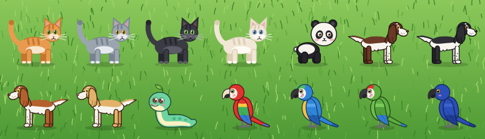

Get Catomania
A free download for every desktop. Pick your platform — the one you are using right now is marked for you.
Linux
AppImage, x64catomania.AppImage
Windows
Installer, x64catomania-win-Setup.exe
macOS
Disk image
Apple Silicon & Intel
xattr -dr com.apple.quarantine /Applications/catomania.app once. On Linux,
make the AppImage executable first: chmod +x catomania.AppImage.
Looking for another file, an older version or the update feed? Browse all releases on GitHub.
What it does
Everything runs locally — no account, no network, no telemetry. Just an animal wandering across your desktop.
Chases your cursor
It walks and runs towards the mouse, stops nearby and looks around, exactly like a real cat that has decided you are the entertainment.
Naps when you stop
Leave the cursor alone and the animal falls asleep — curled into a ring, stretched out or dozing sitting up, depending on who it is.
Five animals
A cat in four fur colors (ginger, gray, black, cream), a panda cub, a springer spaniel, a parrot and a chubby mint snake with a leaf on its head.
Drawn with vectors
No image assets at all: legs, tail, ears, eyes and blinks are vector shapes, so the animal stays sharp at every size.
Pick it up
Drag it with the left mouse button, double-click to pause, scroll the wheel over it to make it bigger or smaller.
Menu & saved settings
Right-click for pause, animal, speed, fur, size, always on top, recenter, updates and quit. Your choices survive a restart.
Self-updating
Installed builds update themselves from the Velopack release feed — from the
menu, or from a terminal with --update-check.
Open source, everywhere
MIT licensed .NET 10 and Avalonia, published as one small Native AOT binary for Windows, macOS and Linux.
Good to know
The short version of the fine print: which build to take, Wayland, updates and settings.
-
Linux — take
catomania.AppImage, make it executable (chmod +x catomania.AppImage) and run it. Nothing to install, and the updater replaces the AppImage file in place. -
Windows — take
catomania-win-Setup.exefor the installed app that can update itself, or the portable zip attached to the same release if you prefer not to install anything. -
macOS — take the
.dmgthat matches your chip (Apple Silicon or Intel), then dragcatomania.appinto Applications. The app is not notarized yet, so allow it once in System Settings → Privacy & Security → Open Anyway. It lives in the menu bar, not in the Dock.
Wayland does not let applications read the global cursor position, so Catomania asks the compositor instead:
- KDE Plasma — a small KWin script is loaded over D-Bus when the cat starts and unloaded when it quits. Nothing has to be installed.
-
GNOME — the
catomania-cursor@catomaniaextension is installed into~/.local/share/gnome-shell/extensionsand enabled on the first run. GNOME picks up new extensions only at login, so log out and back in once. To remove it:gnome-extensions uninstall catomania-cursor@catomania. - Other compositors — the animal only sees the cursor while it is close by. X11 works out of the box.
Only the cursor position is shared, nothing else.
The app checks the latest GitHub release in the background every few hours and restarts itself into a new version when there is one. You can also check right away:
- Right-click the animal and choose Check for Updates.
-
Or run
Catomania --update-check, optionally with--update-url <uri>to use another feed. It prints the check result and exits, applying the update when one is available.
Self-update needs an installed build: run the packed AppImage on Linux or the installed setup on Windows. The macOS app and the portable builds only report the available version; download the new one from this page.
Everything from the right-click menu is kept as JSON in the user configuration
directory: ~/.config/Catomania/settings.json on Linux,
%APPDATA%\Catomania\settings.json on Windows and
~/Library/Application Support/Catomania/settings.json on macOS.
| Field | Values | Default | Description |
|---|---|---|---|
speed | Slow, Normal, Fast | Normal | How fast the animal chases the cursor. |
colorScheme | Ginger, Gray, Black, Cream | Ginger | Fur color of the cat. |
size | Small, Medium, Large | Medium | How big it is drawn. |
alwaysOnTop | true, false | true | Keep the animal above other windows. |
paused | true, false | false | Stay in place and do not chase. |
sleepAfterSeconds | number | 30 | Cursor inactivity before it falls asleep. |